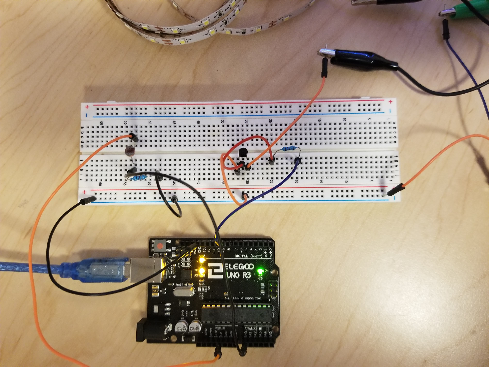

Assignment 4: Voltages
Overview
Create a schematic, circuit, and code that uses a transistor to control load power separate from logic power. Use analogWrite(), a high-load output device, and an input sensor.
A snippet of the schematic:
Assuming that 200mA of current can flow through the photoresistor, it is calcuated to require 25 Ohms of resistance. I used the 10k Ohm resistor. I used the power equation (thank you internet) to calculate the current from the LED strip I used with 87 LEDs. With the current, I was able to calculate that the 11.6 Ohms of resistance is needed so I used the 10k resistor.
What the circuit looks like:

I used the blue LED and connected it to pin 9, with a photoresistor connected to A0 for measurement. The circuit is connected to 5V and ground.
Here's my code:
const int analogInPin = A0; // Analog input pin that the photoresistor is attached to
const int LED = 9; // Analog output pin that the LED Strip is attached to
int sensorValue = 0; // value read from the photoresistor
int outputValue = 0; // value output to the PWM (analog out)
void setup() {
Serial.begin(9600); // initialize serial communications at 9600 bps:
pinMode(LED, OUTPUT); // initializing the LED Strip as output
pinMode(analogInPin, INPUT); // Initializing the photoresistor as input
}
void loop() {
sensorValue = analogRead(analogInPin); // read the analog in value
outputValue = map(sensorValue, 0, 50, 0, 255); // map the sensor value to the LED Strip
if (outputValue > 200) { // if the output value is greater than 200, turn the LED Strip on
analogWrite(LED, 0); // write LED Strip on
Serial.print("LED IS ON WITH OUTPUT VALUE OF "); // write to the serial monitor that the LED Strip is on and show output value
Serial.println(outputValue);
} else if (outputValue <= 200) { // if the output value is equal to or less than 200, turn the LED Strip off
analogWrite(LED, 255); // write LED off
Serial.println("BLUE LED IS OFF WITH VALUE OF "); // write to the serial monitor that the LED Strip is off and show output value
Serial.println(outputValue);
}
// wait 2 milliseconds before the next loop for the analog-to-digital
// converter to settle after the last reading:
delay(2);
}
See it in action:

My LED strip seemed to be a little funky so it wasn't as bright as when I tried to build the circuit in class.